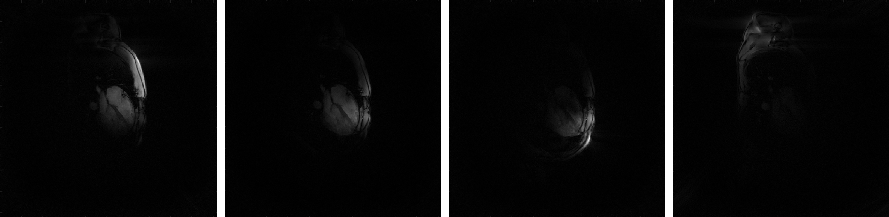

demo_script_1 : A first gridded-zero-padded reconstrcution for non-cartesian data
The present script is written in the file demo_script_1.m in the demonstration folder. You can open it and run it right away.
We present here Mathilda: a non-iterative reconstruction for non-cartesian data. When using Monalisa, this is usually the reconstruction we start with to make a first image of the data we want to work on.
The script contains the following section.
Initialization
The first section identify where the running script is located and deduces to location of the demonstration data in order to load it.
myCurrent_script_file = matlab.desktop.editor.getActiveFilename; d = fileparts(myCurrent_script_file); load([d, filesep, '..', filesep, 'demo_data', filesep, 'demo_data_1']);
Gridded-zeropadded reconstruction without coil combination
The reconstruction function for gridded-zero-padded reconstruction in Monalisa is called bmMathilda. In abscence of coil-sensitivity estimation C, the function can be called as follows:
x = bmMathilda(y, t, ve, [], N_u, N_u, dK_u); bmImage(x);
The viewer (bmImage) displays then the the resulting list of images. You can brows through the list with the up- and down-arrows. The following figure shows a fiew of them:

There is one image for each coil (i.e. each channel). This is why we call these images the “coil-images”. In some sense, if a coil was an eye, its coil-image would be the image that this coil “sees”. You can combine all coil-images by a sum-of-squares operation but then the phase would be lost and the result would not spacially homogeneous. You need a coil-sensitivity estimation in order to combine them properly as in the next section.
Gridded-zeropadded reconstruction with coil combination
If a coil-sensitivity estimation C is present, it can be passed to Mathilda as follows:
x = bmMathilda(y, t, ve, C, N_u, N_u, dK_u); bmImage(x);
The obtained image is the a coil-combined image of all coil-images obtained at step 2 and it magnitude and phase looks as follows:

The coil-combination is performed by applying the coil-sensitivity pseudo-inverse to the list of coil-images.
{kind=link}
Further Explanation
You did your first image reconstruction with Monalisa ! That is an event.
We want to take that opportunity to introduce a few basic important definitions and some vocabulary of Monalisa. We will do that by giving first a brief description of each argument passed to Mathilda:
y : List of data vectors. Each entry of that table is complex-vamued. We shape it in the size nPt x nCh when passed to a reconstruction function, where nPt stands for ‘number of points’ and nCh for ‘number of channels’.
t : List of k-space trajectory points. Each entry is real-valued. We shape it usually in the size frDim x nPt or a reshapable size. Here stands frDim for ‘frame dimension’ and can be 1, 2 or 3. It is the number of spatial dimensions in the image.
ve : List of volume element. Each entry is real-valued. There is one volume element for each point of the k-space trajectory and can be considered to be 1 divided by the k-space density compensation.
C : List of estimated coil-sensitivity maps. Each entry is complex-valued. There is one map for each channel. Each map has frDim dimension.
N_u : This is the grid-size of the k-space Cartesian grid used for regridding. It is a vector with frDim components. In our example it was [512, 512].
dK_u : This is the grid-spacing of the k-space Cartesian grid used for regridding. It is a vector with frDim components. In our case, frDim equals 2 and we will write dK_u as [dKx, dKy]. The field of view (FoV) resulting of that grid is [1/dKx, 1/dKy].
Another quantity that is not explicitely present among that list is the frame-size that we write frSize. It is a vector with frDim entries like N_u and dK_u. The frame-size epresses the spatial size of the finale reconstructed image(s). In the present case (and actually in almost all our example), we have set the frame size equal to N_u.